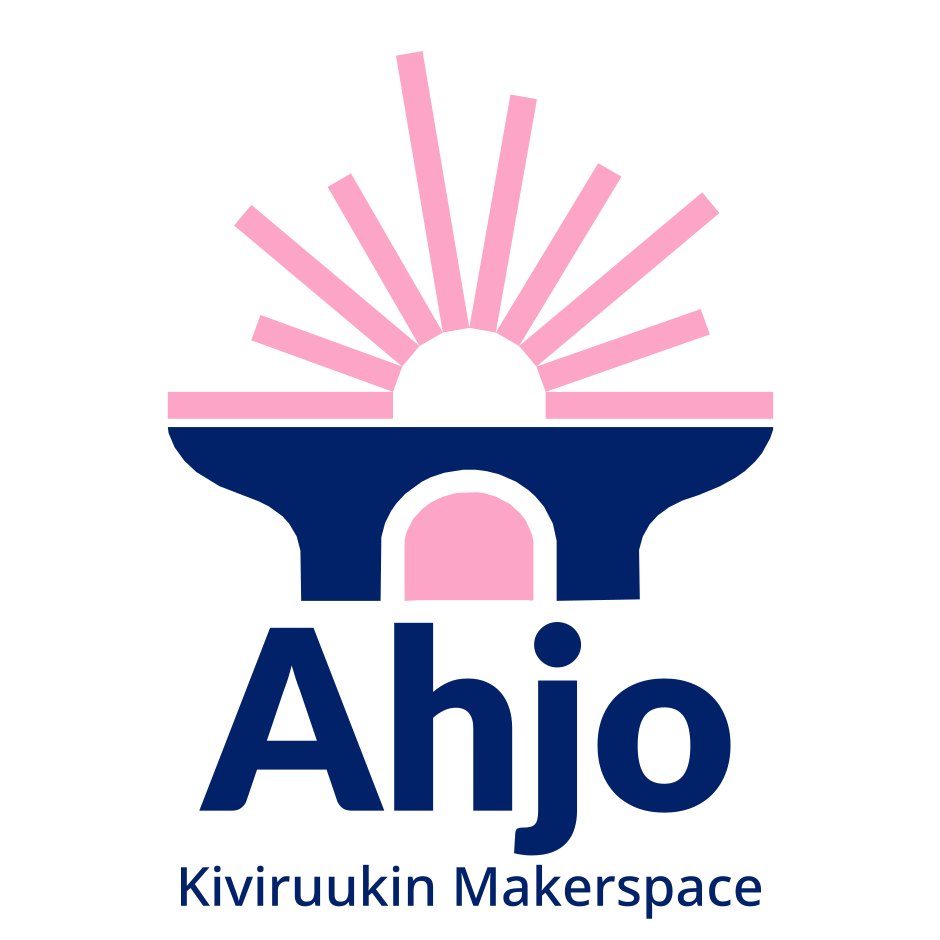

Kiviruukin lukion makerspace
Turvallisuus Ahjossa
Tähän osioon kootaan Ahjon käyttösäännöt, perehdytys ja laitekohtaiset turvallisuusohjeet.
Ahjon turvallisuusohjeet ovat valmisteilla. Koulun vastuuhenkilöt laativat ja hyväksyvät ne ennen kuin Ahjo otetaan käyttöön. Tällä sivulla ei vielä ole hyväksyttyjä ohjeita: siihen asti noudatetaan opettajan antamia ohjeita.
Tilan käyttösäännöt
Valmisteilla
Milloin ja miten Ahjoa käytetään, työpisteen järjestys ja siisteys, kulku- ja lainauskirjanpito sekä omien laitteiden tuominen tilaan.
Opiskelijoiden perehdytys
Valmisteilla
Mitä perehdytykseen kuuluu ennen tilan ja kunkin laitteen käyttöä.
Valvonta ja itsenäinen käyttö
Valmisteilla
Mitä tehdään opettajan valvonnassa, millä ehdoilla tilaa voi käyttää itsenäisesti ja ettei tilassa työskennellä yksin. Itsenäisiin projekteihin tarvitaan Makerspace-ajokortti (Ahjo 1).
Työkalujen ja koneiden turvallinen käyttö
Valmisteilla
Käsi- ja sähkötyökalujen yleiset turvallisuusperiaatteet, työkalujen lainaaminen ja rikkoutuneesta laitteesta ilmoittaminen.
Juottaminen ja elektroniikkatyöskentely
Valmisteilla
Juotosaseman käyttö, juotoshöyryt, virtalähteet ja sähköturvallisuus: jännite- ja energiarajat itse rakennetuissa laitteissa, verkkovirta ja litiumakut.
3D-tulostuksen turvallisuus
Valmisteilla
Kuumat osat, materiaalit, tuuletus ja tulostimen valvonta.
Porakone ja muut mekaaniset työkalut
Valmisteilla
Kappaleen kiinnitys, suojalasit, hiukset ja vaatetus, terien käsittely.
VR-laitteiden turvallinen ja hygieeninen käyttö
Valmisteilla
Turvallinen pelialue, tauot, pahoinvointi ja laitteiden puhdistus.
Ilmanvaihto, henkilönsuojaimet ja paloturvallisuus
Valmisteilla
Kohdepoisto, suojalasit, kuulosuojaimet ja muut suojaimet, kemikaalien varoitusmerkit sekä palovaarat ja sammutusvälineet.
Projektien säilyttäminen
Valmisteilla
Keskeneräisten töiden merkitseminen ja säilytys sekä se, milloin projekti katsotaan päättyneeksi ja puretaan.
Kierrätys ja jätteiden käsittely
Valmisteilla
Materiaalien lajittelu, elektroniikkaromu (SER), vaaralliset jätteet ja komponenttien palauttaminen käyttöön.
Toiminta onnettomuus- ja vaaratilanteissa
Valmisteilla
Ensiapu, hälytys, laitteiden pysäyttäminen ja tilanteesta ilmoittaminen.